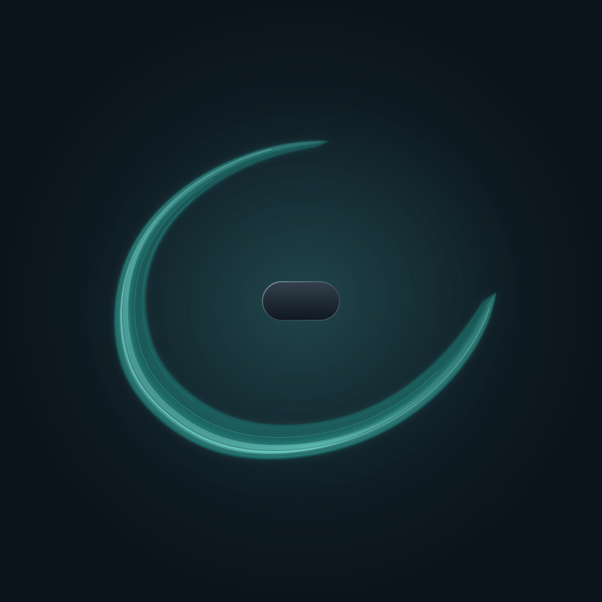
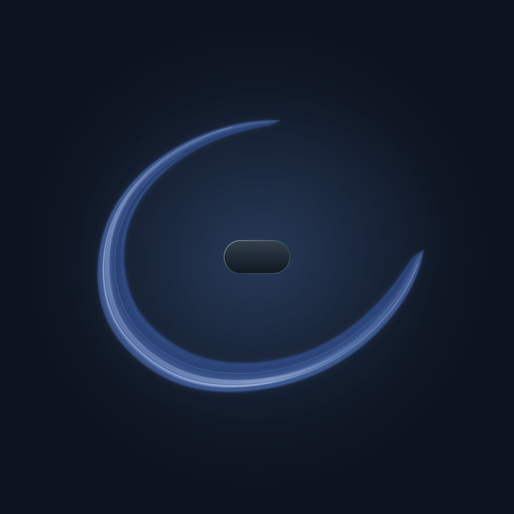
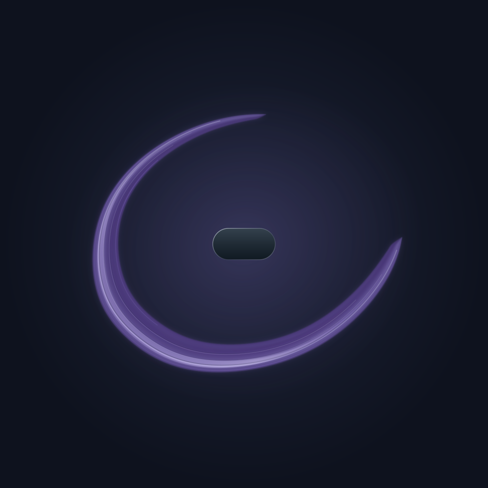
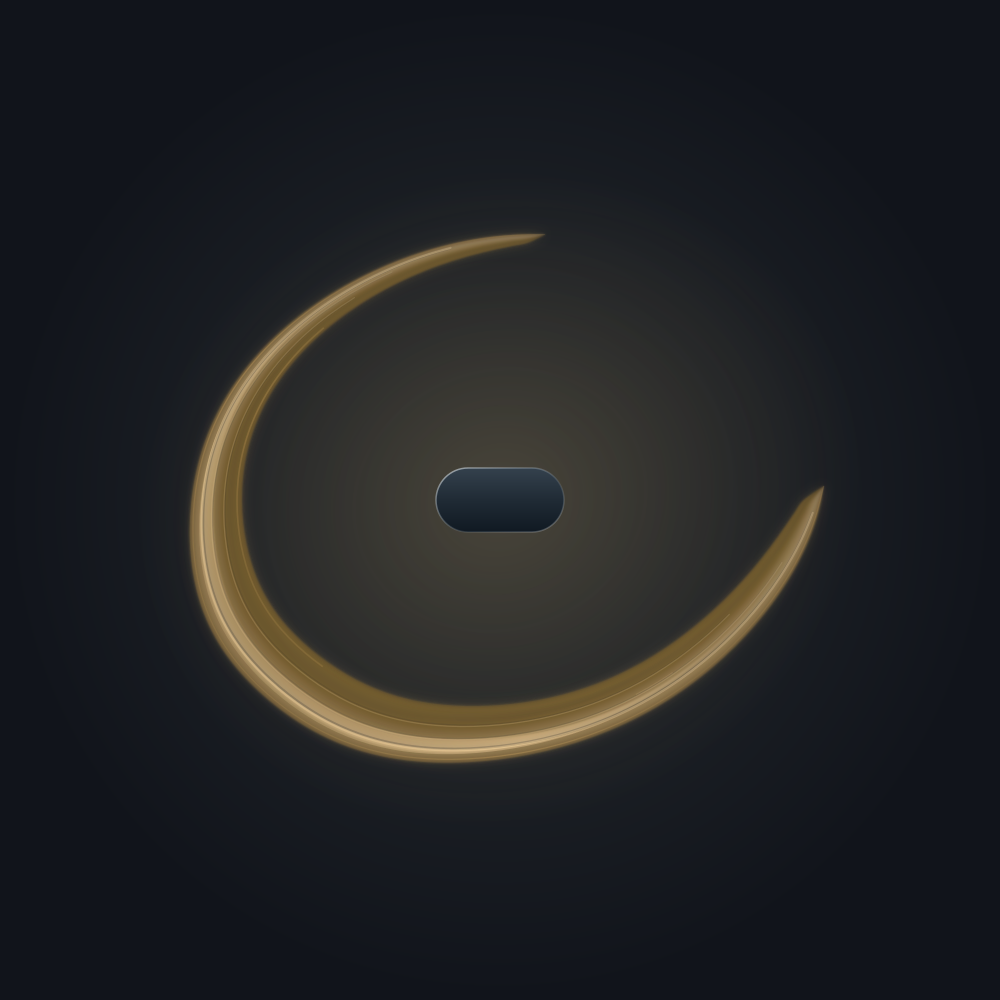
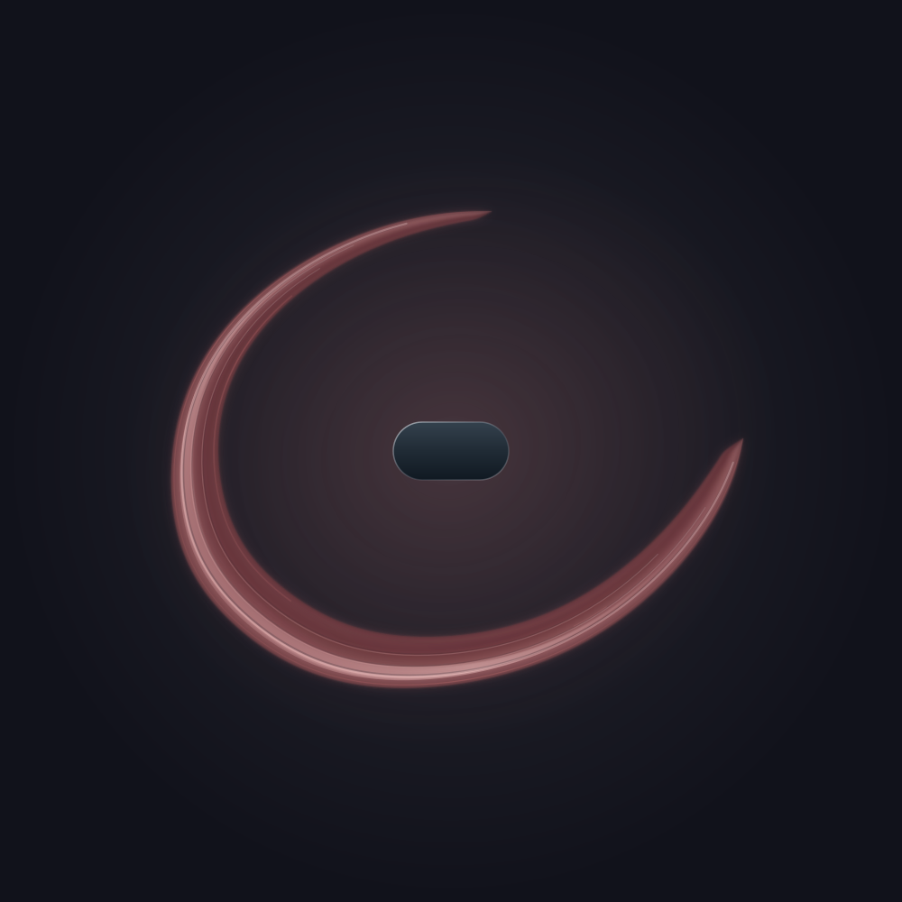
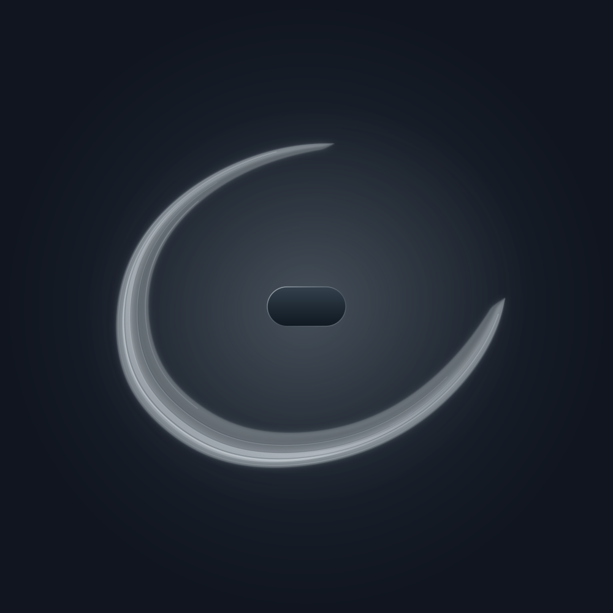
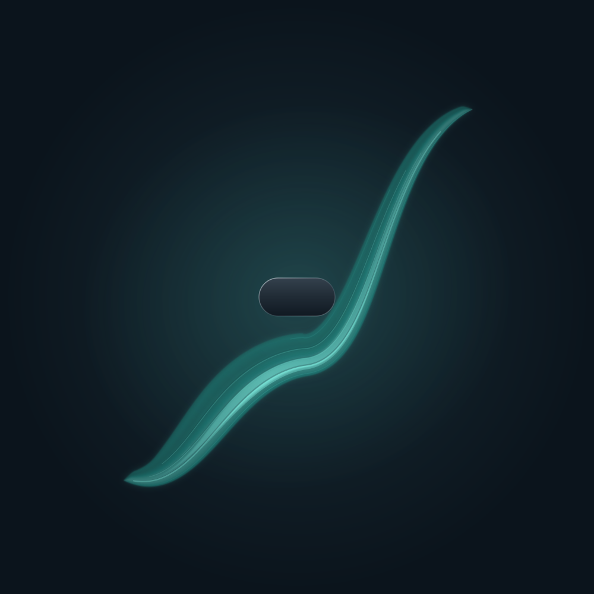
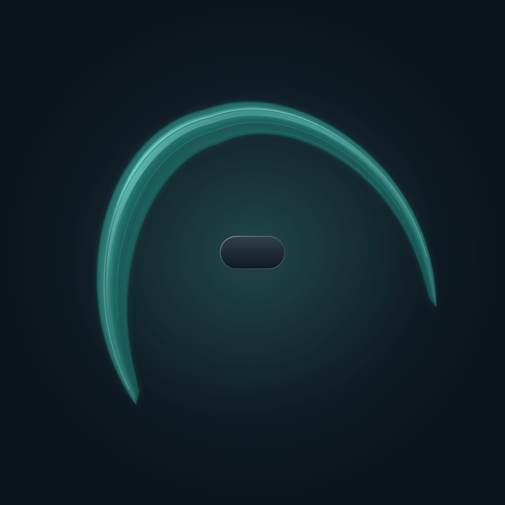

Teal · Attention
Hollow wood and a little air.
Field / Listening / Film
Hear the shared center, six color voices, and the ways a phrase holds space. A short introduction to Field’s optional 24-second listening companion.
A complete Field / 24 seconds
The film uses short excerpts. Here is the complete listening companion to the creative-work Field used in its opening and closing shots.
Reference studies / 24 seconds each
The six colors share the same form and settings. The form examples keep teal and change the posture. Headphones help reveal the stereo space. These are Field’s expressive conventions.

Hollow wood and a little air.

Clear, spare tones.

Damped glass and suspended intervals.

Rounded felt and wood.

Bowed texture and close intervals.

Open harmonics with the center audible.

Teal carried through register and stereo space.

Teal held in a higher canopy.
Vertical cut / 80 seconds
The film uses Field 4.6.0, visual renderer 4.4 and Listening 1.1. Each paired image and audio phrase uses the same drawing controls. The matched studies illustrate Field’s grammar; they do not represent measured conversations.
The opening and closing use the creative-work Field from the intro. Native excerpts are edited and mastered at their original rate. The contour morphs, framing, bloom, cue cards and waveform are film graphics.
A Field expresses a model’s reading of a conversation. Harmony and dissonance do not measure truth or answer quality. Listening is optional, and changes to a field sound on the next listen.